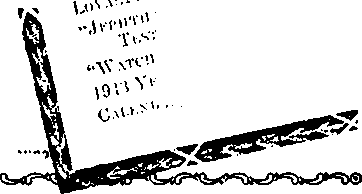

Whither, 0 British Commonwealth of Nations? 3
Final Judgment of Commonwealth Is On! 8
World-wide Hunger Blockade of Christians 14
“Walking in the Rear of the Lord”?
Civilization anti the Missions
Must Practice What They Preach
“Suffer Little Children to Come”
Food Restrictions in the Netherlands
Expelled from School for Being Conscientious 22
Religion in the Public Schools
‘Versed in Schemes of the Devil'
Gradually Undermining the Schools
Presenting “This Gospel of the Kingdom”
Published every other Wednesday by WATCHTOWER BIBLE AND TRACT SOCIETY, INC.
117 Adams St., Brooklyn, N. Y., U. 8. A.
OFFICERS
President N. H. Knorr
Secretary W. E. Van Amburgh
Editor ClaytOn J. Woodworth
Five Cents a Copy a year in the United States
11.25 to Canada and all other countries
NOTICE TO SUBSCRIBERS
Remittances: For your own safety, remit by postal or express money order. When coin or currency is lost in the ordinary mails, there is no redress. remittances from countries other than those named below may h-made to the Brooklyn office, but only by International postal money order.
Receipt of a new or renewal subscription will be acknowledged only when requested. Notice of Expiration is sent with the journal one month before subscription expires. Please renew promptly to avoid loss; of copies. Send change of address direct to us rather than to the post office. Your request should reach its at least two weeks before the date of issue with which it Is to take effect. Send your old ae well as the new address. Copies will not be forwarded by the post office1 to your new address unless extra postage is provided by you.
Published also in Greek, Portuguese, Spanish, and Ukrainian.
OFFICES FOR OTHER COUNTRIES
England 34 Craven Terrace, London, W. 2
Australia 7 Beresford Road, Strathfield, N. 8. W. South Africa 623 Boston House, Cape Town
Mexico Calzada de Melchor Ocampo 71, Mexico, D. F. Brazil Caixa Postal 1319, Rio de Janeiro
Argentina Calle Honduras 5646-48, Buenos Aires
Entered as second-class matter at Brooklyn, N. Y..
under the Act of March 3, 1879. ■
Ashamed to Mention the Creator
♦ Man dearly loves life for the many things that make it desirable. With admiration he gazes at the rugged grandeur of the wild places of the earth, at the imposing mountain rearing its inaccessible peaks to the skies, at the tempestuous and foaming sea. By the banks of a stream which winds its shining course through the willow trees and meadows he finds keen joy in disporting himself amid the tender grass. In impassioned terms he speaks of the intoxicating scent of the forest, of the thousand rustlings of life which stir in the branches of the trees, and under the carpet of leaves. And the greater part of these fervent admirers of the marvelous wonders of creation are ashamed to pronounce the name of the great God who has so generously lavished these numberless blessings on man. Through His prophet the Lord said of Israel, ‘T have nourished and brought up children, and they have rebelled against me.” Is not this representative of the attitude of practically the whole human race to the loving Creator?—From French Consolation (now suppressed).
All Nations of One Blood
♦ Working at Harvard University and the Massachusetts Institute of Technology, two scientists have discovered that all human creatures have in their skins five pigments, two forms of hemoglobin (which is the coloring matter of the blood), carotene (which is found in carrots), melanin, and melanoid. Difference in skin color is simply the different proportions in which these five pigments occur. Whites have the least melanin, and then Japanese, Hindus, mulattoes, and Negroes, in the order named. More women than men are blondes because more women have more carotene, and very blonde persons do not tan, but burn, because of that fact.
"And in His name shall the nations hope.”—Matthew 12:21, A.R.V.
Volume XXIV Brooklyn. N. Y., Wednesday, March 31, 1943 ’ ’ Number 614
WHITHER walks the British Commonwealth of Nations? On February 11 Prime Minister Winston Churchill in the House of Commons declared the joint resolve of Britain and America to make the Nazis “burn and bleed” on other fronts Resides the Russian. Then he added: “Great Britain and the United States . . . are now warrior nations, walking in the fear of the Lord, very heavily armed and with an increasingly clear view of their salvation.” That is Bible language, immediately calling to mind Acts 9: 31. It shows that the prime minister is acquainted with the Holy Bible. It reflects that from earliest times the English people have been associated with the Sacred Scriptures and keenly interested therein. It harks back to the Anglo-Saxon king, Alfred the Great, of the ninth century, who saved England for the English. Not only was he a great warrior, but he devoted himself to advancing the intellectual interests of his people. As part of this task he translated into English over one-third of the book of Psalms, namely, Psalms one to fifty-five, inclusive.
This same England is the site of the Magna Charta, of June, 1215, which was an early but important step toward the constitutional form of government which the nation has enjoyed. It should not be forgotten, though, that just two months thereafter Pope Innocent III published a bull which declared Magna Charta null and void, because it had been extorted from King John by force; and the pope followed this up by excommunicating the barons who had obtained it. In the autumn of that year war followed between king and barons, but Magna Charta survived. Its Chapter LXIII repeats the promise of freedom to the English church and of their rights and liberties to all. From that document dates definitely the great struggle between the Romish arm and the secular arm, and between the aristocratic and the popular rights, which struggle has characterized English history so markedly.
The following century brought forth the noted John Wycliffe, who has been called “the morning-star of the Reformation”. An eminent scholar and preacher, he was the first translator of the entire Bible into English, making his translation, however, from the Latin version thereof. Forty-four years after his death, it far from displayed the spirit of Christianity and rather magnified the contemptible conduct of religion :when the Roman Catholic Council of Constance, which on May 5, 1415, had condemned Wycliffe’s doctrines, had his remains dug up in 1428 and had them burned and then had his ashes cast into the adjoining Swift river.
A hundred years after Wycliffe’s death William Tyndale was born, destined to become a martyr for his persistent efforts at translating and circulating the Holy Scriptures. He declared it was “impossible to establish the lay people in any truth except the scripture were plainly laid before their eyes in their mother tongue”. This moved him to translate and print the “New Testament” in the familiar spoken English of his day. He had declared he would produce a version that a plowboy could read and understand. Because of the power and influence of Boman Catholicism in England Tyndale was obliged to leave the country and do his work on the „ continent of Europe. Copies of his translation of the “New Testament” from the Original Greek early found their way into England. In 1526 the Roman Catholic bishop of London thundered out his prohibition of them. In 1528 a number of copies of this “New Testament” version were collected, yes, some copies of which had been purchased by the Hierarchy just to be destroyed, and were burned at St. Paul’s Cross, in London. Cardinal Wolsey was dreadfully enraged ; and Sir Thomas More, whom the Vatican has in recent years canonized as a saint, was employed to denounce Tyndale. Still the printed English “New Testament” continued to enter England and find its way to eager hands and readers. Beligion failed to suppress God’s Word.
Tyndale also translated the first four books of Moses and put copies in circulation. His educational work was interrupted by his betrayal, imprisonment and martyrdom, in 1536. While being fastened to the stake, at which he was first strangled and then burned, he cried out: “Lord, open the eyes of the king of England.” The work on the English Bible went ahead, however, and in 1535, while Tyndale was in prison, Miles Coverdale put out the first printed English Bible. Its printer’s name being unknown, nobody knows where it was published, apparently not in England, because of the religious powers there. Coverdale made use of the work Tyndale had done, translating the rest of the “Old Testament” from the best German and Latin versions at hand, thus producing a complete English Bible.
Before Tyndale’s death things changed in England, now under King Henry VIII, upon whom religious intrigue bad-forced a Spanish wife incapable of bearing child. Unlike other political rulers of today both within and without the British Commonwealth of Nations, Henry VIII had the rare courage to defy the pope and his screeching bulls of excommunication, and to explode the papal claim that abject submission to the Ro- . man papa is absolutely indispensable to salvation of humans, whether British or of other nationalities. The Anglican church, or “Church of England”, resulted.
Henry VIII avowed as reasons for supporting the Protestant reformation “the desire of removing usurpations, establishing the ancient -rights of the church and the crown, correcting abuses prejudicial to true religion”. Hence the English church could not refuse to take into consideration the subject proposed for examination nor refuse to sanction proper reforms. Whether the liberty from papal bondage resulting from Henry’s bold move was beneficial to the British nation let every impartial observer judge from its history thereafter. This makes pertinent the question, Shall now Britain and her sister nations return to that bondage in the coming postwar world?
Before Parliament dissolved on July 18, 1536, to end its six-year term under which Henry VIII had carried out his innovations, one of its last acts was "to petition the king that a new translation of the Scriptures be made by authority and set up in the churches. Since Henry’s reign Britain has been one of the sturdy bulwarks of Protestantism. Hence it was that, at the coronation on May 12, 1937, at Westminster Abbey, London, King George VI declared himself “a faithful Protestant”. To the question put to him by the archbishop of Canterbury, “Will you to the utmost of your power maintain the laws of God and the true profession of the Gospel? Will you to the utmost of your power maintain in the United Kingdom the Protestant Reformed Religion established by law!” the king replied: “All this I promise to do.” After his crowning there followed a rite first introduced at the crowning of the Protestant William and Mary in 1689, namely, the presenting of the Bible. The words accompanying this presentation were: “Our gracious King, we present you with this Book, the most valuable thing the world affords. Here is wisdom. This is the royal law. These are the lively oracles of God.” Upon this Bible the king put his right hand, and he kissed it before signing the oath and thereafter declaring himself a Protestant who will maintain the Protestant accession to the best of his power, according to law.
Such procedure cannot be brushed aside lightly, even if but a ritual of longstanding tradition. Why not! Because it is openly done in the name of God and before His sight. It therefore entails a heavy responsibility upon H. M. King George VI, from which he cannot escape before God. It put him in a peculiar position with respect to certain events of 1942, as we shall shortly see.
Not by the pope’s indulgence was it that, four centuries after Henry VIII, a monarch of Britain could take the above oath. To keep their necks free of the Vatican’s yoke the British have had to put up a valiant fight. In 1588, during the reign of Queen Elizabeth, daughter of Henry VIII, came the Spanish armada of King Philip of Spain, “blessed” by the pope; but the hardy, resourceful British stood it off and defeated it. Not less so in the epic struggle of 1940 did their descendants hold out under the devastating 'attacks of the Nazi air armada of another “sword of the pope”, namely, Adolf Hitler. In both instances the pope lost out, and so many of the British owed so much to so few. During the reign of the virgin queen Elizabeth the British Empire was born, when she chartered the English India Company, in A. D. 1600. Within seven years after the beginning of the empire, to wit, May 13, 1607, the first permanent settlement of the British was made at Jamestown, Virginia. This marked the beginning of the thirteen colonies of the British Empire in America. For 169 years thereafter these colonies were an integral part of the British Empire.
It was that same England that gave to these colonies such men of tolerance as William Penn, who refused to take off his hat even to the king but nevertheless was spared alive to. found, later, Pennsylvania; and also Roger Williams, the founder of Rhode Island and who has been called the “pioneer of religious liberty”. Before his death in 1684 Williams had organized and built up a political community with absolute liberty of religion as its chief cornerstone. To this Britisher and colonist more than to any other man is due the American system of a “free church in a free State”.
Early in the reign of Elizabeth’s successor, King James I, that most beloved and popular book was produced, the translation of the Holy Bible known as the “King James Version” or “Authorized Version”. Even to this day it is the best seller. It was based mainly on Tyndale’s translation. It is the version from which primarily the scripture quotations are made in all publications of the Watchtower Bible and Tract Society, whose books and booklets on the Bible since 1920 have gained a circulation of over 400,000,000 copies, in 88 languages; which circulation is exceeded only by that of the King James Version Bible itself. Despite its popularity with Christians, which has continued for three centuries, this Bible has been and is condemned by the pope. and his hierarchy. Such is exactly as foretold in the dedicatory foreword of the Bible, which is addressed to King James and which says concerning popish disapproval (paragraph 5): “Humbly craving of Your most Sacred Majesty, that since things of this quality have ever been subject to the censures of illmeaning and discontented
persons, it may receive approbation and patronage from so learned and judicious a Prince as Your Highness is, whose allowance and acceptance of our labours shall more honour and encourage us, than all the calumniations and hard interpretations of other men shall dismay us. So that if, on the one side, we shall * be TRADUCED BY POPISH PERSONS AT HOME or abroad, who therefore will malign us, because we are poor instruments to make God's holy Truth to be yet more and more known unto the people, whom they [the Popish Persons] desire still to keep in ignorance and darkness; . . . ”
It was in the stronghold of Protestantism, in London, that the great educational organization was founded on March 7, 1804, the British and Foreign Bible Society. Its attention was first turned to Wales, where the demand for God’s Word was then extremely urgent, and 25,000 Bibles and Testaments were printed in Welsh and distributed. Since then and down to the close of 1928 it has published and circulated Bibles to the number of 385,000,000 copies. From England it turned its energy to Continental Europe, where great quantities of Bibles were put in the hands of the spiritually hungry people. Bible Societies were soon formed on the Continent. In India the Bible Society found a permanent foothold. In the western English-speaking world the New York Bible Society was founded in 1804; the Philadelphia Bible Society in 1808; the American Bible Society in 1816; and the Watchtower Bible and Tract Society in 1884.
All this has not been without great opposition from fanatical religionists; and the sanctimonious ruler of the Vatican has denounced them as “pestiferous Bible Societies” and has made it a religious sin for children of the Roman Catholic sect to have in possession or to read the Bibles thus issued. After 1817 the operation of the Bible Society in the Austrian empire, homeland of Adolf Hitler, was rendered illegal by restrictions enforced by the Roman Catholic government. Where the Vatican has been unable to prevent the circulation of the Bible it has viciously opposed, hindered and tried to suppress the distribution of literature explaining the Bible. The latest proofs thereof will be forthcoming in this article.
With the spread of the British Empire the circulation of the Bible has spread. The title “Empire” officially dates from 1876, when Queen Victoria became Empress of India. By the so-called “Statute of Westminster” the British Empire nominally came to an end on November 26, 1931, being superseded by a federation of self-governing British states or commonwealths, and the Parliament of 'Westminster at London ceased to be the Imperial Parliament. Thus the British Commonwealth of Nations came into being. All commonwealths, together with the colonies and protectorates, have as their binding tie their joint fealty and allegiance to the king of Britain. This erstwhile “Empire” is the largest body of land and people found under any onex jurisdiction on earth. It takes in about one-fourth of the earth’s surface, with more than one-fourth of the estimated number of the human family. Vast portions of it lie in each of the five grand divisions of the earth, in Europe, the Americas, Asia, Africa, and Australasia. Its organization differs entirely from that of any other empire in history.
Control by the central government in Britain over the outlying parts runs from autocracy to a merely nominal control. In such a way Britain is .the heart of a vast world-power or imperialism, which has belted the globe. It has long stood as a barrier to world domination by its traditional enemy, the Roman Catholic Hierarchy, whose heart lies at Vatican City. It must be remembered that it was the London treaty of 1915, made with the kingdom of Italy, that barred the pope from having any part in the negotiation of the peace treaty of World War I, the pope’s connections with the Teutonic allies having been so notorious. It is all too evident, therefore, that the non-Catholic British Empire, or Commonwealth now, has ever been a thorn in the side of the Papacy, whose ambition has been for a “total” Catholic globe or earth, with headquarters at the Vatican.
Being of such earth-embracing dimensions, the British imperialism has therefore been the foundation and backbone of a civilization independent of Roman Hierarchy domination, for three centuries, The scheme of the Papacy has been and yet is to break up that liberal, constitutional, non-Catholic world power. Failing in this, it then aims by crafty means and subtle to cast a spell and weave an entangling net of control about it and to victimize it to do its bidding. Which method shall it now be? In that anguished year of 1940 it appeared for a time as if the Papacy, by its concordat partners, Hitler and Mussolini, would tear the very heart out of the British Commonwealth of Nations; but the courage of the British again bore them up and the Island fortress held out under assault by air and sea.
Now, in this year 1943, it seems that the pope’s conquest by direct onslaught has been blocked for a long time to come. He sits on his artificial fence of loudly-advertised “neutrality” waiting for more definite developments to guarantee that victory shall go to the United Nations in order that he may shine up to the sure victors and snatch a victory out of their victory. His own “voice”, the Catholic press, declares that he is “for Victory after victory”. Said a distinguished monsignor of his over a nation-wide broadcast from America’s capital during “The Catholic Hour”, January 3, 1943, while speaking on “War and Revolution”:
A far more important question than “Who will win the war?” is the question: “Who will win the revolution?” In other words, what kind of ideologies or philosophies of life will dominate the world when this war is finished? . . . Pray for victory? Yes! We will win that, there is not doubt! But the peace, the restoration of the moral law, a new order based on God’s justice—that will come only by a return to the mind and spirit of the Church during the first few centuries. ... We have a war to win; and we have a revolution to win. A war to win by overthrowing the power of the enemy in battle; a peace to win by making ourselves worthy to dictate it. ... This is the true revolution! All the other revolutions of the twentieth century have been from without; this time we want a revolution from within.
This planned Catholic revolution therefore means they will henceforth work from within the British Commonwealth, to capture control of both it and America. The Hierarchy is doing so now, notably since 1940, and will do so more energetically in the postwar “new order”. It is already dictating to all parts of the British Commonwealth and its colonies and protectorates. The situation is too critical now for prejudice to cause you to disregard this warning. Read the substantial evidence given below. Face the facts. Act!
Dominating the earth for these three hundred years past by a control over 13,000,000 square miles of the earth’s surface and 500,000,000 of its inhabitants, the British Empire or Commonwealth bears a heavy responsibility before Almighty God, earth’s Creator. Who is He? The King James Version of the Bible, at Psalm 83:18, answers for men wanting to know: “That men may know that thou, whose name alone is JEHOVAH, art the most high over all the earth.” Furthermore, at Psalm 24:1,2 it is written: “The earth is the Lord’s, and the fulness thereof; the world, and they that dwell therein. For he hath founded it upon the seas, and established it upon the floods.” Not to the pope, then, but to the Lord, Jehovah, must the British Commonwealth, and particularly Britain its seat, render an account for the way she handles the earth and the seas whose vast waters her ships ply.
The British Commonwealth, long attached to the Holy Bible, is unavoidably answerable to the “Most High over all the earth” for her treatment of the peoples in her territories as well as those who come under her sphere of influence. Having assumed imperial dominance t over such multitudinous populations, ishe makes herself liable to God for the ^education of such peoples in that knowledge which is essential to their eternal salvation, to wit, the knowledge of Jehovah God and the Kingdom of His Son. (See John 17:3.) Such knowledge includes not merely the text of the Bible, which British Bible Societies have published to the millions of copies, but also the explanation of the Bible that the peoples may understand the meaning of the text. In this year 1943 is the British Commonwealth advancing such knowledge? or suppressing it as Hitler did?
From world events since 1914 and from the Holy Bible it can clearly be proved that the judgment of the nations, and particularly of “Christendom”, has been on since 1918, when World War I ended. The British Commonwealth is the outstanding part of “Christendom” and cannot escape the judgment. Jehovah’s King, Christ Jesus, is on His heavenly throne as Rightful Ruler of the New World and as Judge. Through the proclamation of His established Kingdom from and after 1914 by His witnesses, all nations have been gathered before Him for judgment, and not one of the Commonwealth nations, colonies and protectorates is hid from His judicial scrutiny. His division of the people as “sheep” and “goats” with respect to God’s Kingdom is proceeding irresistibly, as described in the parable of the end of the world, at Matthew 25:31-46. How does the British Commonwealth of Nations stand in the judgment? Can she justify herself to a prolonged existence? Will her “salvation”, of which she has an “increasingly clear view”, be unto endless world domination in a postwar “better world” of human creation? Her acts now must determine.
The Bible, which King George VI kissed at his coronation, sets out the rule of judgment. At Psalm 9:17 it is written; “The wicked shall be turned into hell, and all the nations that forget God.” As shown in the English Revised Version Bible “hell” here is Sheol, which Hebrew word means the death state'and hence national extinction for all God-forgetting nations. You will say, “Surely the British Commonwealth has too many Bibles to forget God; why, in Britain there is one in practically every home.” Well, then, turn to Proverbs 10:27 and read: “The fear of the Lord prolongeth days: but the years of the wicked shall be shortened.” Note that, at Acts 9:31, the churches of the early Christians are described as “walking in the fear of the Lord, and in the comfort of the holy ghost”, and hence being “multiplied”.
Prime Minister Churchill, you told the House of Commons that 'Great Britain and the United States are now warrior nations, walking in the fear of the Lord’. We now ask, Which “lord”? You must know that Roman Canon Law addresses one pontiff as “Our Lord God the pope John XXII”; and that Pope Boniface VIII, in the bull Unum Sanctum, declared: “What can you make of me but God?” And Pope Leo XIII, who died in 1903, declared: “We hold upon this earth the place of Almighty God.” And his predecessors in office, such as Innocent III of Magna Charta days, and Leo X, Alexander VI, Pius VII, and Pius X, all claimed to be God on earth. Are you sure, Mr. Churchill, whether Britain together with her sister nations of the Commonwealth is walking in the fear of the pope as lord rather than in the fear of Jehovah God Almighty? Not words spoken in Parliament, but the acts of Government committed in the Lord God’s sight must be let speak, in order to get at the naked truth. Probe honestly and calmly into the facts, because times are too serious to deceive self.
The Judge of all men, Christ Jesus, knows the facts fully and cannot be deceived. He lays the judgment to this rule: “He that is not with me is against me; and he that gathereth not with me scattereth.” ‘’Inasmuch as ye have done it unto one of the least of these my brethren, ye have done it unto me.” (Matthew *12:30; 25:40) Note that He judges by what is done even to “the least” of His brethren. Who, then, in “Christendom’s” eyes, rates as the “least”? The British Government took knowledge of such “least” ones in its White Paper (Cmd. 6120) issued October 30, 1940, and entitled “Treatment of German Nationals in Germany”. Mark the following extracts from that report compiled by Sir Neville Henderson, former ambassador to Berlin, concerning those in Nazi concentration camps:
Thera were 1500 Jews and 800 Ernste Bibelforscher (International Bible Students) . . . Each man wore a badge—Jews yellow with the star of David, Bible Students violet, etc. . . . Jewish prisoners wrote and received letters twice a month. The Bible Students were allowed no communication with the outside world, but, on the other hand, their rations were not cut down. Herr X spoke with the highest respect of these men. Their courage and religious faith were remarkable, and they professed themselves ready to suffer to the uttermost what they felt God had ordained for them. [Page 10]
The next group were the “Bibelforscher”, a religious sect taking its doctrine from the Bible and having a considerable membership in every part of the country, but proscribed by the Gestapo since its members refuse military service; these unhappy people were almost as badly treated as the Jews. [Page 35]
In Brit ain and America these International Bible Students are known as “Jehovah’s witnesses”. From the very rise of Hitler to power by papal intrigue these Jehovah’s witnesses have refused to “heil Hitler” or salute his swastika or exalt the State above Jehovah God. Immediately after Hitler signed his concordat with Pope Pius XI in 1933, just as his Axis partner Mussolini had done in 1929, Hitler banned Jehovah’s witnesses, seized their property, dissolved their organization, and burned their books, 50,000 on one occasion. Finally he rounded up 6,000 of them and subjected them to unusual treatment in concentration camps. Many were shot, beheaded, and tortured to death. Can Hitler be said to be walking in the fear of the Lord in such treatment of these faithful Christians, Jehovah’s witnesses? He is indeed walking in the fear of the pope in the discharge of his concordat, but not in the fear of the Lord God Almighty, Jehovah, nor of His Son, Christ Jesus.
Not alone in Nazified Europe and Japan are these Jehovah’s witnesses despised and downtrodden, but in all “Christendom” they are harried and oppressed. This agrees fully with Jesus’ prophecy to His faithful followers concerning the “end of the world”: “Then shall they deliver you up to be afflicted, and shall kill you: and ye shall be hated of all nations for my name’s sake.” (Matthew 24: 9) Are you skeptical that “Christian” Britain and her sister nations are included in those “all nations” manifesting such hate of Christ’s followers? It is proudly said that “the sun never sets upon the British Empire”. Follow now the sun’s course as it throws light upon the things done in the British Commonwealth of Nations with respect to Jehovah’s witnesses. Let us also see -who is back of these things since Nazism gained control in Germany in 1933 and deployed its “fifth column” throughout the earth.
In Australia the International Bible Students, or Jehovah’s witnesses, have been active for more than forty years, distributing the literature published by the Watchtower Bible and Tract Society, including its magazine The Watchtower, which announces Jehovah’s Kingdom and Christ’s presence as His King and Judge. In the spring of 1938 the president of the Watchtower Society visited that “land down under”. The religionists under the lead of the Roman Catholic Hierarchy and its religious press sought to prevent even his being permitted to land. The Society’s branch at Sydney (Strathfield) had arranged 1 for him to speak at the Town Hall on * the subject “Warning”. Before he arrived, the city council canceled the engagement for the Hall, and the author* ities refused other halls; the postmastergeneral’s department refused to supply land wires and facilities for-the broadcasting of this Bible lecture, and insisted on censorship of the speech lest there be any expose of the Roman Catholic Hierarchy. Finally, the speech was delivered in the open air, at the Sydney Sports Ground, where 25,000 attended, which was six times as many as the Town Hall could have accommodated. Thereafter Jehovah’s witnesses in Australia and New Zealand circulated the booklet Freedom, or Romanism? which included the speech “Warning” and other data of interest.
Religious opposition to Jehovah’s witnesses increased as their numbers and activities' increased. The next year the total war began and Australia entered. The religionists, who honeycomb the government offices and strategic places of power, sought to use the war emergency as a pretext for crippling and suppressing Jehovah’s witnesses. The premier of New South Wales led in the fight against them. In October, 1940, he caused the public press to publish many unfounded allegations against these Christians and made the threat that as the federal government had not taken action, the state would set in motion the necessary legal machinery giving them power to act against Jehovah’s witnesses.
On January 16, 1941, Prime Minister Menzies prematurely announced in parliament that he proposed to ban Jehovah’s witnesses, his last job before leaving for London. On January 17 an order in council was gazetted wherein the governor-general declared to be unlawful those “organizations known as Jehovah’s witnesses or the Witnesses of Jehovah; the Watch Tower Bible & Tract Society; The International Bible Students Association; The Adelaide Company of Jehovah’s witnesses; and Consolation Publishing Co.” Previous to this, on January 8, the naval department had ordered the four radio stations used by Jehovah’s witnesses for broadcasting God’s Kingdom message to shut down. Now seizures and arrests followed the ban, even murder being attempted against Society representatives. But with what result? Have these witnesses stopped witnessing for Jehovah God and His Kingdom? No; they obey God rather than men. Although stocks of the Bible held by the Society were confiscated and locked up, these Christians, these ‘least of Christ’s brethren’, have gotten other supplies locally and have concentrated on witnessing to the people with the Bible alone. Despite the official ban and persecution, this work has not come to nought. It is increasing, and Australia and the Hierarchy’s tools there are learning joltingly that this work is not of men and ^annot be overthrown, but that the religionists are found to be, not “walking in the fear of the Lord”, but fighting against God.—See Acts 5: 38, 39.
■ In all Australasia eight lands have now outlawed Jehovah’s message and the messengers of His Kingdom. New Zealand preceded Australia and banned them as a “subversive organization”, on October 21,1940, so naming them for the purposes of the Public Safety Emergency Regulations, and allowing them no chance to prove Jehovah’s witnesses are not subversive. Their conviction without trial was in direct violation of Clause 30 of the Magna Charta, the basis of British justice. Due protest was made by cable to King George VI at London. Then Malaya, or the Straits Settlements, banned the Lord’s message, on January 17,1941, and was followed by Burma on May 26; this was before the Japanese invaded the land, on January 18, 1942. Even the Netherlands East Indies caught the spirit and proscribed the work of Jehovah’s witnesses, in March, 1941. The British Crown colony of Hong Kong also ordered out Jehovah’s witnesses, and thereafter fell to the Nipponese. The British possession of the Fiji Islands has allowed no shipments of Watchtower literature to Jehovah’s people in that colony since 1936. British-held India has likewise prohibited importation of spiritual food for the Lord God’s servants there.
Swinging westward with the sun to the vast continent of Africa, we note the Hierarchy’s black hand in operation there, particularly since the Copper Belt rioting in Rhodesia in 1935. At the investigation held thereon by a Royal Commission there was no evidence whatsoever to connect Jehovah’s witnesses with the trouble. Nevertheless, although the ringleaders were all Roman Catholics, no mention was made of this fact by the British government. In Northern Rhodesia and Southern Rhodesia there is now a total ban on importation and distribution of the Kingdom message of the Most High God.
The Union of South Africa imposed its total prohibition of importation of Watchtower literature in 1941, having withheld the Watchtower and Consolation magazines already from October, 1940, onward. West Africa likewise took adverse action in 1941, whereas in Gold Coast there has been a prohibition since 1936. Nigeria distinguished itself in similar anti-Jehovah fashion beginning February 4, 1941. .
What, now, does the sun disclose as it beams down upon the Americas? Nought but the same God-defying action in lands adhering to the British Crown. In 1936, in Trinidad, the governor in Executive Council issued a proclamation under the “'Seditious Ordinance” prohibiting the importation into this British colony of all Golden Age [Consolation'] and Watchtower publications. Jamaica began banning Watchtower literature in 1940 and then enacted a total prohibition in September, 1941. British Guiana took like action in January, 1941.
In the Dominion of Canada, which trembles under the shadow of Catholic Quebec and its Francophile Cardinal, the Hierarchy early got in its work, using as its tool a Quebec Catholic, Ernest la Pointe, then Minister of Justice. In that northern land nobody has exposed the schemes of the Roman Catholic Hierarchy for world domination and subjugation of the British Empire as have Jehovah’s witnesses; and it was the witnesses the Hierarchy were after. Immediately after the arrival of the new governor-general from England into Canada, they dealt a swift blown Their lackey, using his high Dominion post, caused to be passed, on America’s Independence Day, July 4, 1940, an order in council declaring illegal the “Jehovah’s Witness Organization”. This was meant to sound the death knell of God’s witnesses who are “walking in the fear of the Lord” in Canada. The fact that these Christians still continue to carry on their witness work with only the Bible, which is “the sw'ord of the spirit”, and the further fact that their numbers and work increases does not relieve the Canadian authorities and the vexed Hierarchy of guilt in fighting against God, wdiose work they are unable to overthrow in Canada. The anti-Jehovah ban continues there to date. Condign punishment at Jehovah’s hands w;aits to be meted Out upon such unrepentant forgetters of God in the terrible “battle of that great day of God Almighty”.—Revelation 16: 14.
Without warning another blow’ was struck against those w'ho feed at the table which the great Shepherd Jehovah spreads for His sheep in the midst of their enemies. (Psalm 23:1, 5) This time it was off-shore from the United States,
namely, in the Bahama islands. On September 8, 1942, this Crown colony placed all Watchtower publications under ban, not merely for the duration ‘ of the global war, but perpetually. Protest was cabled from America to the governor-general, the former King Edward 1 VIII, who abdicated the throne to * “marry the woman I love”; hut without avail. The ban will doubtless continue to stand, but not perpetually; at the longest only till the execution of .Jehovah’s judgment at the battle of Armageddon.
The above anti-Theocratic movements of the enemies of divine truth in the periphery of the British Commonwealth of Nations, finally left the Island fortress of Britain standing isolated as the sole surviving region where the printed message of Jehovah’s Theocratic Government could be freely circulated and enjoyed by Christians and by all persons of good-will who hungered for truth and righteousness.
But sinister forces were at work. Like Hitler, who first attacked the weak territories such as Poland, Norway, and others, and then closed in on the core of resistance, Britain itself, so now these same forces, under central control from the Vatican, closed in on the main and strongest Commonwealth stronghold. Although the “Catholic population” of Britain numbers only 2 percent of the entire population, yet prominent members thereof occupy influential and strategic positions in the Government. To shield these, Cardinal Hinsley, of Westminster cathedral, has been playing up to the Government with great protestations, and has set in motion the so-called “Sword of the Spirit” movement to round up all religious denominations and to lull them to sleep in the arms of the evil-designing plotters for world domination. Certainly with his knowledge and approval the London Catholic Herald published the editorial, as of July 12, 1940, shortly after the French Republic fell with a “stab in the back” from Hitler’s fellow warrior. From that religious editorial the following is quoted:
It is not impossible, as the well-informed Diplomatic Correspondent of the Observer suggested last Sunday, that something in the nature of a Latin-Catholic bloe, comprising France, Spain and Italy, may shape itself on the Continent. This bloc would endeavor to act on the Catholic populations of Germany and Austria in the hope of at least diminishing the influence of the anti-Christian elements in the Reich so that ultimately an antiBolshevik Christian-authoritarian bloc may be formed in Western Europe in opposition to the Liberal-Socialist-Protestant-Front TENDENCIES OF GREAT BRITAIN, AMERICA, Russia, and even Prussia.
Ever since Canada, New Zealand and Australia proscribed the activities of Jehovah’s witnesses, the opposition forces in Great Britain have caught up the false charges and cried out that the witnesses are “subversive” to the interests of the state and should therefore be controlled or muzzled. On Sunday, January 19, 1941, two thousand Londoners, being gathered together, passed and published a resolution exposing the said false charges; and “that as Jehovah’s witnesses we commend the stand of the British Government against the religious-totalitarian combine and appreciate their kindness in permitting us to faithfully carry forward our Christian work of preaching the Gospel and in continuing to grant us the right of the freedom of assembly and worship; that as Jehovah God’s servants we champion His name”. Copies of this Resolution were sent to the governments of Canada, New’ Zealand, Australia, and to the Home Office, London.
Thereafter millions of copies of the paper Kingdom News were distributed, issue No. 8 thereof being entitled “Jehovah’s Mandate to His Servants—Witness Against Papal Rome-Nazism-Fascism Enemies of Christianity”. The booklet Conspiracy Against Democracy was also widely circulated, and the book
let Theocracy. In January, 1941, the Government’s Import Licensing Department refused the London Branch office of the Watchtower Society any more import licenses, thereby cutting it off from its source of supply in Brooklyn, N. Y., while at the same time the Government at Whitehall granted priorities for the shipment under convoy of millions of quarts of beer 18,000 miles from Canadian breweries around to northeast Africa. Along came the May 28, 1941, issue of the magazine Consolation (No. 566), with a leading article on "Hitler’s Eeligion”. A prohibition was at once clamped down on this Watchtower publication ; but after appeal the ban proved to be just temporary.
Then there was a shift in the Government’s Ministry of Information, and complaint made itself vocal that a Protestant had been turned out of office to make way for a Catholic as Information Minister. Much dissatisfaction has followed his taking office. In a long article headed “Writers See Harm by London Censor”, the New York Times, as of January 24, 1943, says concerning criticism by the Council of the Empire Press Union in its annual report:
It was the opinion of the council, representing correspondents in London from all parts of the British Empire, that the remedy proposed by Brendan Bracken, Minister of Information, was worse than the abuse it was designed to eure. What the Empire correspondents regarded as legitimate expressions OF OPINION HAD BEEN CURBED Since last March 26 [1942] when Mr. Bracken announced in the House of Commons his decision empowering cable censors to prohibit the cabling of dispatches fealeulated to produce ill feeling between the United Nations or between them and a neutral country. The council pointed out that the Empire correspondents, like the Americans, protested that the retention of such a rule would undermine confidence in the war effort and create mistrust even in the actual news given out in this country.
Shortly after the Minister of Information’s obnoxious decision of March, 1942, MARCH 31,1943 official efforts were made to cripple the personnel of the London Branch office of the Watchtower Society. Then the Branch manager, an American who is an ordained minister of the gospel and who had been managing the British branch since 1937, was ordered to go back to the U. S.A., and that with no reason being assigned by the London Government. Finally, after vigorous but vain efforts to remain at his post of Christian service there, this American was served with a deportation order. His appeal to Mr. Herbert Morrison, the Home Secretary of Britain, was refused. Finally, he was arrested, jailed, forcibly put on a ship and sent back to America through submarine-infested waters. All of which caused a Scotland paper, The Vanguard, to feature in its October, 1942, issue a full-page article headed “Has the Pope Got Morrison? The Deportation of a 'Jehovah’s Witnesses’ Official”.
As to the magazine The Watchtower, of which more than 800,000 copies are printed each month in America, it is a magazine devoted exclusively to discussion and explanation of God’s Holy Word and is now in its sixty-fourth year. Beginning with the August 15, 1942, issue featuring the article "Atonement for the New World”, The Watchtower failed thenceforth to reach its British subscribers, although mailed out. It was evident that the Minister of Information’s censors were on the job. Then, on November 2,1942, the Minister of Information caused to be published the government order that “no person shall send or convey, or have in his possession for the purpose of sending or conveying” and “no person shall despatch by post from the United Kingdom to any destination outside” the Watchtower publications, namely, The Watchtower, the Kingdom News, the Informant [instructions for home missionary work], and Consolation.
Cable advice to the above effect reached the president of the Watchtower Society at Brooklyn, November 28.
Forthwith the following cablegrams were sent that afternoon:
Nov. 28, 1942 His Royal Highness King George VI London
Government Order banning Watchtower magazine deprives thousands Britishers j necessary spiritual food. Does your Govern* ment wish to take responsibility before God?
Consider Psalm Two verses Ten to Twelve. We pray Your Majesty will countermand Order in behalf of Christianity.
Watch Tower Bible and Tract Society, Hon. Winston Churchill
Prime Minister
London
Government Order banning Watchtower magazine violates Atlantic Charter and will cause millions of American Christians to protest against un-Christian action. We petition you use good office for revocation of Order, thereby providing British Christians necessary spiritual sustenance.
Watch Tower Bible and Tract Society,
World-wide Hunger Blockade
of Christians
' Neither have these cablegrams been acknowledged by those appealed to, nor has any action of relief been extended, to this day. Is not this matter of higher importance than to deserve such disdainful treatment before the Lord God? Behold! the powers of the British Government have now joined the other members of the Commonwealth in encircling these Christian Jehovah’s witnesses, ''the least of these my brethren,” with a spiritual blockade to starve them into submission to the Roman Catholic Hierarchy, if that were possible. These Christian brethren of Christ must now go hungry. But what about those who deny them the spiritual food and drink? Let all the Commonwealth governments and the Colonial governments take notice that Christ Jesus, Jehovah’s Judge, denounces those responsible for this spiritual hunger and terms them goats, unto whom He says: “Depart from me, ye cursed, into everlasting fire, prepared for the deVil and his angels: for I was an hungred, and ye gave me no meat: I was thirsty, and ye gave me no drink: I was a stranger, and ye took me not in [but deported me]: ... in prison, and ye visited me not. . . . Verily I say unto you, Inasmuch as ye did it not to one of the least of these, ye did it not to me.” (Matthew 25: 41-45) Be warned, you rulers of the earth; you are not dealing with but a mere organization of humble, inoffensive, Christian men and women, but with representatives of Jehovah God of hosts and with Christ Jesus, the “King of kings and Lord of lords”.
In the face of such overt acts against Jehovah’s covenant people, where is this vaunted “walking in the fear of the Lord” on the part of Great Britain! Is this deprivation of the witnesses of the Most High God an act in keeping with the best traditions of Britain for toleration, free worship of God, and free Bible instruction of a distraught people! Nay; it is a surrender to Vatican City, and to the fear of man. Solemnly sounds the warning of God’s Word: “The fear of man bringeth a snare: but whoso putteth his trust in the Lord [Jehovah] shall be safe.” (Proverbs 29:25) Britain’s conduct now follows the example of the Nazis, who burned the Watchtower publications; but Britain’s is on a wider scale, for what the British Commonwealth does extends over a vaster territory than Nazified Europe and affects Christians throughout the world.
, In 1942 the prime minister was reported as saying: “What we have we hold. I did not become the King’s first minister to liquidate the British Empire.” However, full freedom of worship and freedom from spiritual want have not been held, though included in the “Four Freedoms” and backed up by the Atlantic Charter, They have hebn sacrificed by yielding to the religious grudge and malicious designs of the Vatican. Does any government official of the British
Commonwealth think, since such unChristian restrictions upon Jehovah’s witnesses, that for such reason victory over the totalitarian enemy is now certain? During the terrific Nazi blits against Britain from September, 1940, to May, 1941, did the Island fortress of Britannia fall because the witnesses of Jehovah were free to offer Watchtower publications from house to house and on the streets? Was not British morale strengthened rather by their quiet courage under air alarm and attacks? Why restrict them now at this late date, at a time of round-the-clock air raids on the Nazi-Fascists?
Though military victory over the totalitarian foes outside be gained, yet true victory must mean also triumph over the totalitarian enemies within and who are the fifth-column agents of that foreign power, the Vatican, the most totalitarian power of all time. Military victory may be won, but not peace with the Lord. There can be no peace with God as long as His witnesses are hated of all nations of “Christendom” and oppressed; there can be only wrath.and destruction in store, awaiting the outbreak, in Jehovah’s due time, of His “battle of that great day of God Almighty”.
Read Revelation, chapters 13 and 16, and ask yourself, “Is the British Commonwealth delineating itself as the symbolic ‘two-horned beast’ there described? Is London, the heart of the Commonwealth, proving and marking itself as ‘the seat of the beast’?” “We cannot escape history,” said President Abraham Lincoln in 1862. And the British Commonwealth cannot escape the history written in advance in the symbologies of The Revelation, which must have fulfillment in those who conform to the exact descriptions therein given. It is time for the prophets of Four Freedoms and of a “much better world” beyond the total war to beware. This is no trivial matter simply because Jehovah’s witnesses are few. It is most important, MARCH 31, 1943 because destruction everlasting is prescribed for the modern-day “beast” and the “false prophet”, in Revelation 19:19, 20.
Not only Jehovah’s witnesses are damaged, but all the British people, and all freedom now and for the postwar period is jeopardized. By restricting Jehovah’s witnesses, who are staunch, uncompromising foes of all Hierarchy totalitarianism and world domination, the Commonwealth governments are clearing out of the way the last obstacle to being overreached by the Hierarchy of that “god on earth”, the pope. The Hierarchy deals with dictators and authoritarian governments. By its Jesuitic methods it is relentlessly building up all nations to that desired condition where the people’s rights are nil and the dictator decides and makes deals without popular approval or consent, and pays off his obligations to his backers. Revelation 17:1-14 foretells beyond fail that the Babylonish harlot of “organized religion” will ride the “beast” in the postwar federation of nations. She will drive you to your destruction at the hands of God.
Fighting against Jehovah’s witnesses is antagonizing Jehovah God himself. It is all part of the Devil’s scheme to get all nations of “Christendom” lined up against the Theocratic Government of Jehovah under Christ His King. Then nothing will prevent the liquidation of the British Empire; all will be lost. The Devil’s scheme is to blind the people and keep them ignorant of God’s righteous New World and His way thereto, and so bring about their destruction at Armageddon. Governments, particularly those of so-called “Christian nations”, stand specially responsible to Almighty God Jehovah and His King for acts against His witnesses whereby the people are spiritually starved and kept in darkness concerning His kingdom of life and peace unending. You are -walking, yes, but whither, 0 British Commonwealth of Nations?
ONE of the first dispatches that came from the Philippines after the ' attack on Pearl Harbor was the news that two Catholic priests had been appre-'hended for fifth-column work, sending t signals to the Japanese, to assist them * in, seizing the islands. Through a fluke, this somehow got by the Catholic censor employed on a San Francisco paper and was there published. Probably the man responsible for letting, this cat escape out of the bag lost his job thereby. Men should be more careful.
It was probably to offset this correct bit of news that within a very short time thereafter the “Reverend” Thomas B. Cannon, director of the Jesuit Philippine Bureau, was granted the privilege by the Columbia Broadcasting System (February 8, 1942) of telling his listeners about the great things the Jesuits are doing in the islands. It would help to take the taste out of the mouth of those who chanced to see that San Francisco item, which, by the way, was reproduced in photostat form m Consolation.
Anyway, “Father” Cannon got on the air, with no *cost to the wealthiest “chubch” organization in the world, and, through the kind intercession of Hon. Martin J. Kennedy, of New York, his speech found its way into the Congressional Record of March 4, 1942. There isn't anything that a Boman Catholic congressman would not do to please a Jesuit and get a few lines of publicity for the greatest possible enemy the United States could have. Mr, Kennedy quotes “Father” Cannon as having said, in part:
, Ever since the beginning of the war in the Philippine Islands .1 have been constantly called upon, as director of the Jesuit Philippine Bureau, to supply information concerning the safety of our 251 Jesuit missionaries now laboring in that vast archipelago. And, of course, the news has been very scarce. What little news we have had up to now, we are happy to say, has been good news; and we 16 hope for further good news from time to time. The spotlight of the world press is on these missions of the Philippines today. [It certainly was when that dispatch was. published in that San Francisco paper.] The war has served to call attention to a work too easily forgotten, because it is so far away. I am anxious, in this brief talk, to explain the essential value to the world, apart from a strictly religious value, of our Christian missions. [In the item in question, this involved betraying the noble, kind, generous, uplifting work of the people of the United States in behalf of the people of the Philippines, into the hands of the ignoble, cruel, selfish, degrading totalitarianism of the Japanese military megalomaniacs.] I say to you members of the radio audience, whoever you are, and however preoccupied you may be with the affairs of the day—whatever your creed or occupation in life—that you cannot ignore the missions of the Catholic Church. [He said something that time.] Today more than ever before in history, strange though it may seem to say this, the missions of the Catholic Church are of primary importance to the world. [How else can all the republics of the world be overthrown and the “abomination that maketh desolate” set up?] I propose a rather startling thesis: The missions of the Catholic Church have civilized the world.
One really appreciates what the Catholic missions are doing when one gets the inside news from Japan that every Catholic priest and every Catholic nun in Japan contributes to the Japanese war chest, and the Protestants were run out who would not go along with the scheme to civilize China by butchering some millions of its population in war and disposing of other millions by pushing the sales of opium in the same way as it has been pushed by other civilizers elsewhere. And in China too, in years gone by. Do you know who first shoved opium upon China at the point of the bayonet?
<cReverend Father” Cannon, S. J., and Hon. Martin J. Kennedy and the Congressional Record take time off to refer
CONSOLATION
to “the adoring of idols of brass and stone as practiced by the overwhelmingly pagan population of China”. That’s good. Suppose some time you visit Barclay street, New York city. It is on the north side Of the United States post office and ■runs from' Barclay street ferry to Broadway. You can’t miss it. And when you get up opposite the post office you will see the greatest assortment of idols of brass and stone or terra cotta, or wood painted to look like something expensive, that ever your eyes were set upon. There is usually a “Virgin Mary” and a “Baby . Jesus” in every window, and enough more in the back of the store to fill a freight car. It is the American center for “church” goods, or, as one might say, if he dared, “idols of brass and stone as practiced by the overwhelmingly pagan population of China,” Vatican City.and other places north, south, east and west.
Then follow three columns of fulsome self-praise, which is the first, greatest and only valuable asset of the Roman Catholic Hierarchy, and then this reference to the infamous bigot, Hilaire Belloc:
Hilaire Belloc, the great historian, wrote a scholarly book, Europe and the Faith, proving this one point: his last words sum it up completely : 'The faith is Europe, and Europe is the faith.’ He shows that the Roman Empire never really perished but was transformed. In the full maturity of the Empire it accepted the Catholic Church, and the Church has caused the Empire to survive in a finer and better form. In this we have the secret and soul of western civilization. Without the church, therefore, there is no understanding of this civilization of ours.
Now, kind reader, you know why all is so sweet and lovely in Europe and in the rest of the world. It is because “the Church has caused the Empire to survive”. Look at Otto Hapsburg. Isn’t he something? Doesn’t he survive! Look at the pope. How* about him! He survives, too. And so, believe it or not, i. e., believe the “Reverend Father” Cannon, S. J., director of the Jesuit Philippine Bureau, MARCH 31, 1943
and Hon. Martin J. Kennedy of New York, and the Columbia Broadcasting System, and the Congressional Record, that—
Like it or not, we must admit that our civilization, the civilization we worry about today, is that Christian, Catholic civilization built up by the work and the worry and study and sweat and blood and tears of Catholic missionaries [and Japanese and German and Italian soldiers]. No matter how far afield you may go, you will, if you are honest, get back to this fact as an axiom: The missions of the church have civilized the world.
And that, kind reader, explains just why the world is in such a fix. It is because this old Roman Empire that Jesus refused to accept from Satan even as a gift has revived in the form of a “church”. If you don’t believe it, get the morning paper and see the oodles of free advertising that the Singing Harlot has handed to her on a silver platter.
Winning the Heart of China
♦ Madame Chiang Kai-shek, wife of the president of China, thinks the countries of the West made a big mistake when they tried to win Chinese confidence by kicking the Chinese in the ribs; she believes with President Roosevelt that after incomes reach a certain size the excess should go to the people as a whole; and she finds pleasure in the fact that though China is at war, and has been for many years, there are more Chinese children in school than ever before, and thus some blessings are arising out of the war conditions anyway.
Prices in Chungking
♦ Raymond Clapper says that in Chungking a man’s shirt worth $2 costs $8 in American money and up to $160 in Chinese dollars, with shoes three times the price. Moreover, the prices are rising so rapidly that the Chinese merchant would rather not sell his goods. They are worth more to him than the money he gets for them, because they grow more valuable all the time, while money gets less so.
WITH the spread of regimentation plans of the Devil to drive into his camp every person and to destroy those who do not yield comes the never-ending question: Shall we obey God rather than man? No creature who expects to get life eternal in God’s kingdom can avoid this question. Children, youths and their parents cannot escape a decision of the question. The question cannot be answered in favor of obedience to God by mere words alone. It requires action dictated and approved by the Word of God. The taking of such affirmative stand by children and the young through preaching the gospel exposes children and their parents to the reproach of the enemy. The agents of Satan on earth today oppose the ministry of praise by children in the same manner as they fought children and the young followers of Christ nineteen hundred years ago.
Hitler seizes the young from the parents at a very early age and puts them under state control and teaches them what he considers to be to the best interests of the state, ignoring the rights of parents and the Word of God. The spread of the totalitarian spirit by the same crowd that backs Hitler has caused their religious agents in America to advocate the breaking up of homes and taking children away from their parents and their worship and service of Almighty God.
In every instance where such family relationship has been broken up in the United States, it has been by framed and misapplied laws because the child of God refused to quit preaching as the ambassador or minister for God’s Theocracy. The responsible officials fail to recognize that one who is in a covenant with Jehovah cannot quit or discontinue preaching without violating God’s law, which would brand the violator as a practitioner of idolatry, to be destroyed for ever. One must choose to obey either the law of man or the law of God, and those in a covenant with God must obey the law of God.
The state has no authority to intervene in the effort of the parent to teach a child righteousness. Marriage and childbearing is God’s provision for all humankind that shall live on the earth. It is beyond the power of the state to interfere with or abridge the right of all persons within its bounds to procreate. This right cannot be denied even to criminals? For greater reason the state cannot interfere with and encroach upon the parents’ right to bring up a child in the way acceptable to their own judgment consistent with the law of God.
It has ever been the law of the Lord to place the inescapable responsibility upon the parents to teach their children from infancy the requirements of the Lord. “0 God, thou hast taught me from my youth: and hitherto have I declared thy wondrous works.” (Psalm 71:17) “Remember now thy Creator in the days of thy youth.” (Ecclesiastes 12:1) Upon all parents who are in a covenant to do God’s will there is laid the duty and specific obligation to teach their children the Word of God, and it is the duty of the children to obey their parents who give such instruction. The parent will be diligent to bring his children to congregations where the commandments of Almighty God are studied and discussed. The children are permitted to participate therein so that they may learn the way of righteousness and how they may receive life everlasting. When Moses stood before Jehovah’s typical covenant people on the plains of Moab and delivered the instruction from Jehovah he knew that soon thereafter the children would take the place of their parents in the ranks of God’s army. Forcefully he urgently reminded the parents of their duty to teach their children. He urged upon them diligence and faithfulness in teaching the truth to their children. That
1 Skinner v. Oklahoma, 316 U.S. 535.
was important then; the fulfillment thereof is of greater importance now. “And these words, which I command thee this day, shall be in thine heart: And thou shalt teach them diligently unto thy children, and shalt talk of them when thou sittest in thine house, and when thou walkest by the way, and when thou liest down, and when thou risest up. And thou shalt bind them for a sign ‘ upon thine hand, and they shall be as frontlets between thine eyes.” (Deuteronomy 6:5-8) See also Deuteronomy 4:9,10; 11:18-21; 12:28; 32:46. The apostle of Christ Jesus also states the command thus: "And, ye fathers, provoke not your children to wrath: but bring them up in the nurture and admonition of the Lord.” (Ephesians 6:4) The children also are commanded: “Children, obey your parents in the Lord: for this is right. Honour thy father and mother; which is the first commandment with promise; that it may be well with thee, and thou mayest live long on the earth.”—Ephesians 6:1-3.
"Nurture” means to discipline and train the child in the way of righteousness ; and such way of righteousness God has marked out in His Word. The words “right” and “righteous” are from the same root and mean the same thing. “Admonish” means to teach and instruct; to counsel and advise the children of and in accord with the expressed will of God set forth in the Bible. Parents who failed thus to instruct their children would be provoking their children to do wrong or to wrath.
The so-called “churches” of organized religion constantly baptize infants,' which ceremony, although a formalism, means that such child is impliedly dedicated to do the will of Jehovah God. Therefore such “churches” recognize none as too young to be consecrated publicly for service of religion. Thus the recognized religions advocate and practice child consecrations. Jehovah’s witnesses as faithful servants of Almighty G-od recognize the importance of per
MARCH 31, 1943 mitting the understanding child* to enter into a covenant with Jehovah; but such faithful parents do not stop there. The duty of such parent does not end with instruction. If the child indicates a willingness to do the will of God, the parent is under obligation to aid the child in taking the necessary steps to serve the Lord by doing the overt act of participating in obeying the positive command to preach the gospel of God’s kingdom to others.
To permit the child to believe in righteousness and to refrain from practicing right is entirely wrong. “For as the body without the spirit is dead, so faith without works is dead also.” (James 2:26) “Let your light so shine before men, that they may see your good works, and glorify your Father which is in heaven.” (Matthew 5:15,16) It is therefore the duty and privilege of parents and children to practice what they preach by consistently acting as Jehovah’s witnesses before men. This the parents and their children do from house to house and on the streets in every city in the land by distributing the Watchtower publications to persons of good-will toward Almighty God.
This greatly enrages the clergy in the same manner as the Pharisees were overcome with violent anger against Jesus because the children followed after Him and cried out hosannas to the King. They do not want to extend the principle of “child consecration” (un-Scripturally used by them) to the faithful servants of the Lord, whose children are unquestionably dedicated to Jehovah. They object to Jehovah’s witnesses’ teaching their children, and transform their objection into violent action in many instances where Jehovah’s witnesses’ children are permitted to practice what their parents teach them. At the same time such religionists violate the same child labor or delinquency and other laws that are frequently mis-
19
applied against such faithful parents. Such clergy are known to use ‘'altar boys”, “choir singers” and many other youthful employees whose lives are - exploited for the sake of the sm-Scrip-tural activity of such clergy.
It cannot be said that the children are t too young to be permitted thus to worship and serve Jehovah God by preaching. The government has no authority or power to tell a child at what age he can begin practicing the requirements of Almighty God taught him by the parent. The government does not have the authority to intervene where conscience is involved. Thus to allow the government to intervene would for ever destroy and end the inalienable American heritage of the right to maintain a home, raise children, and follow generally the pursuits of happiness enjoyed by a free people. The government can intervene with respect to the care and education of the child only when the parent “neglects” or “misuses” the child to such an extent as to endanger its welfare and the interests of the state. As long as the parent does not violate this fundamental rule, the state cannot interfere with the “religious” practices of the parents and children.
The children are preaching, ministering the gospel message, and are not violating any law. Preaching the gospel of the kingdom of God is the proclaiming to others the Scriptural truths of and concerning Jehovah God and His kingdom, The Theocracy, under Christ Jesus. From the Scriptural standpoint it is not unusual that a child should teach and preach the gospel at a very early age. When Jesus was twelve years old, long before He was anointed with the holy spirit, He preached and taught as one of Jehovah’s witnesses in the temple, where He confounded the wise men and astonished them with His wisdom and statements (Luke 2:46,47); and other children followed in His steps. Timothy, long before he reached the age of maturity, while yet a small child, also taught and preached. He accompanied the apostle Paul, who preached publicly in the market places, on the streets, and from house to house. See Acts 16:1-3; also 1 Timothy 4:12, where Paul, writing to his ‘son of faith’, Timothy, said: “Let no man despise thy youth; but be thou an example of the believers, in word, in conversation, in charity, in spirit, in faith, in purity.” Samuel was consecrated for service in the temple when very small and of tender age.—1 Samuel 1:24; 2:11,28. See also Jeremiah 1:6,7.
Christ Jesus condemned religionists because of their effort to prevent and ridicule the following of little children after Him. He said: “Suffer little children to come-unto me, and forbid them not: for of such is the kingdom of God.” (Luke 18:16) See also Luke 11:52; Matthew 18:1-6; Psalms 8:2; 148:12, 13; Proverbs 8: 32.
Therefore it is unreasonable and un-Scriptural to contend that it is not proper for a child or youth to engage in publicly giving praise to Jehovah God by acting as His minister or witness, explaining Bible prophecy and presentday fulfillment thereof. It should be borne in mind that this is the primary way that Jehovah’s witnesses worship and serve Almighty God and to deny this right to the children or youths through punishing the parent, breaking up the home or taking the children away, because the children exercise such right, . is to deny to them freedom of worship , of Almighty God, which freedom alone gives freedom from want and from fear. Such denies them as ministers the equal and same protection enjoyed by the recognized clergy.
It is not for the courts or any agency of the state to say that because of his youth one is not entitled to praise and serve the Lord, nor can they contend that one is too young to be a minister of Jehovah God, entitled to legal protection of the exercise of his God-given Constitutional right. Thomas Jefferson said, “that to suffer the civil magistrate to intrude his powers into the field of opinion, and to restrain the propagation of principles on supposition of their ill tendency, is a dangerous fallacy, which at once destroys all religious liberty, because he, being of course judge of that tendency, will make his opinions the rule of judgment, and approve' or condemn the sentiments of others only as they shall square or differ from his own."2
Such ones holding contempt against the youngster as a minister should consider the following searching question propounded by the apostle Paul: “Who art thou that judgest another man’s servant? to his own master he standeth or falleth. Yea, he shall be holden up: for God is able to make him stand.” (Romans 14:4) Jehovah God, and not man, anoints and authorizes the preacher to act in harmony with Isaiah 61:1, 2, and no man has authority to question his authorization or ordination. If children meet these requirements of God as His ministers, why and how can man demand more ? They are God’s servants, not man’s. God is the one that must be satisfied that they are His ministers. (1 Corinthians 6:19; 7:23) The apostles were ignorant and unlearned men in the eyes of the clergy and worldly wise. They did not attend parochial schools or seminaries, and Christ Jesus did not teach them in such places.
Since Jehovah’s witnesses have an earthly organization with which they operate, it is proper and necessary that they also possess and carry credentials attesting to the fact that they are ordained and authorized to represent such organization, the Watchtower Bible and Tract Society.
! Section 34 (Virginia Code as amended), commonly known as the Statute of Religious Liberty. See also State v. Smith, 127 P. 2d 518, 155 Kan. 588; Barnette et al. v. West Virginia State Board, 47 F. Supp. 251.
MARCH 31, 1943
Regardless of what men may do or threaten to do, Jehovah’s witnesses and their children will continue to preach “this gospel of the kingdom” until Jehovah God, not man, has said it is enough. Such young ones will not hesitate to rush forth joyfully to meet the requirements of God’s Theocratic Organization, to preach “this gospel of the kingdom”. In this they will dedicate their lives eternally to the service of Jehovah God and continue to sing songs of praise to Jehovah by carrying the Kingdom message to others as long as there is one person in the land to hear, and until “the land be utterly desolate”.
Thus a victory will be given to them by Jehovah, and the Devil’s challenge to put men on earth that will maintain their integrity will be further answered by showing that Jehovah has children and youths who immovably prove the Devil to be a liar.
“O sing unto the Lord a new song; for he hath done marvellous things: his right hand, and his holy arm, hath gotten him the victory.”—Psalm 98: 1.
Food Restrictions in the Netherlands
♦ Netherlanders formerly appeared to be unusually well-fed, but they don’t look so since the spring of 1940, when their country was seized by Hitler. They used to eat lots of cheese, because they kept many cows; now the cows are few and the butter and cream go to Germany. Dutch housewives have had to fall back on a combination of gelatine and starch that is about as much like butter as a religionist is like a Christian. Eggs used to be plentiful; now anybody who gets an egg once a week is considered lucky. Beef, pork and veal can be had at the rate of one pound' per week, but the German-controlled radio is trying to popularize horse flesh, doped up with onions, rice and vinegar. Vegetables are scarce, because the bulk of the crop must go to the dehydrating plants, and thence direct to Germany.
21
THIS page showing children expelled from school and denied an education (for which their parents are taxed) will interest Consolation readers. They are a few of many similar cases. (1) Roberta and Bonnie Groff, of Murphysboro, III., expelled for conscientious refusal to salute a flag. (2) A group who attend a private school at Tulare, Calif., most of them having been expelled from the public school. (3) The little miss shown here was expelled from a Lowell, Oreg.,
school. She devotes sixty hours a month to publishing the good news. (4) Denied education at Millville, N.J. (5) Cajon, Calif., also had a flag-salute case; expelled these bright youngsters. (6) Some others of Lowell, Oreg. (7) Barbara Castle, 13, and Fred Hurtado, 12, were expelled and committed to a Juvenile Home, but subsequently released on order of Judge Hartrick, who ruled that they had been committed without reason, there being no law requiring anyone to salute a flag contrary to his conscientious belief. (8) Faithful little witnesses of Bronaugh, Mo. The boy in the center stood his ground even though the teacher threatened to get the police, in a vain effort to make him violate his conscience, something the teacher, not having a conscience of any sort, could not understand. (9) Robert Ginier, age 10, of West Virginia, also expelled for not saluting a flag. (10) Children at Sumas, Wash. (11) Iris Ackland, 6 years, La Salle, HL, expelled from two schools, and using time off to good advantage in telling people about God’s kingdom. Some of these were reinstated in school after presentation of the ruling of the 77th Congress that respect to the flag is sufficiently shown by simply standing at attention.
THOUGH in America there are thousands of churches, as well as Sunday schools of some 200 different religions, that is not considered enough by the religious leaders. Of the 168 hours in each week there are twenty-four that are usually set apart for religion or for ‘worship’ of one ^ind or another. One can start at midnight, if he wishes, and some do, and can keep right at it until midnight comes again. And one need not stop then. Also, besides Sundays, there are Saturdays, and these can be ■made religious days also. That is done by some. But that is not considered sufficient. So the public school is being invaded by the people who are in the religious business, who insist that the children must be given religious instruction during the precious seventh of their time that is now devoted to their regular lessons and the acquiring of information that will prove of practical benefit to them in later life.
What is really the meaning of this proposition to introduce religion into the public schools? and why are those in the religious business so anxious to get a hold on these schools?
A consideration of the first point is important in order that this article may' not be misunderstood to reject the value
MARCH 31, 1943
of the Scriptural counsel to “fear God and keep his commandments: for that is the whole duty of man”. But what do the chief proponents of religion in the public schools have in mind by the expression? Do they want to introduce the Bible and its teachings?
The evidence shows that there is no intention to introduce the Bible into the schools. The Bible was once read and taught in the classroom, and still remains in some isolated regions, but it has been generally abandoned. The religious leaders evidently do not consider the Scriptures of importance. To them it is far more important to teach religion. This is especially the attitude of the Roman Catholic Hierarchy; and so-called “Protestants”, as well as Jewish religionists, have given in and agreed to drop the Bible.
The Hierarchy’s first attack upon the public schools was the abolishing of the Bible, which was rejected as “an attempt to pervert the hearts of Catholic children”. Bishop Spotswood of a previous generation said, “1 would rather one-half the people of this nation should be brought to the stake and burned than one man should read the Bible and form his judgment from its contents.”
Another spokesman for the Hier-
archy’s attitude was the publisher of The Freeman’s Journal, who said, “The Catholic solution of this muddle about Bible or no Bible in schools is: ‘Hands off? No state taxation or donation to any schools. You look to your children and we will look to ours. We don’t want you to be taxed for Catholic schools. We don’t want to be taxed for Protestant or Godless schools. Let the public school system go to where it came from—the devil.”
Prof. Geo. T. Kenner, of Teachers College, Columbia University, may be considered a npn-Catholic authority. He said, “We must be a little more realistic about these things. I am skeptical about teaching the good, fundamental truths even if they have Biblical sanction.”
From the foregoing statements and from the further fact that the reading or study of the Bible has been practically discontinued in the schools (chiefly as a result of Hierarchy pressure) it is evident that “religion in the schools” does not include the Bible, but means something different. What, then, is sought?
At an educational get-together of the New Jersey Elementary School Principals’ Association, late in 1941, Professor
. Paul H. Vieth, of Yale University, proposed to teach religion on a nonsectarian basis. He said he would “expose children to all points of view”. (As there are, as mentioned, over 200 different “points of view”, this way of teaching religion would be even worse than the proposal to break up the regular classes and teach these 200 brands separately.)
The professor’s proposition was probably induced by the demand of each of the 200-odd brands to be heard. He sought to satisfy these demands while still preserving the unity of the public schools. .
Another comment on the proposal to teach religion in the public schools came from the editor of the Protestant Digest, Kenneth Leslie, who said, “What we are putting into the schools is church instruction—not religion ... If we unite the church to the state via the schools, we destroy the argument against helping parochial schools.” It would likewise destroy the argument for helping the parochial schools. v
The mention of the parochial school raises the question about what these show as to the desirability of teaching religion in the schools along with other, so-called “secular”, subjects.
Great claims have been made for the parochial schools, and a considerable amount of praise has been bestowed upon them by not altogether disinterested parties. Some consideration may be given to the ■ subject here for that reason, as well as for the reason that between 2,500,000 and 3,000,000 Catholic children are receiving their education in such schools at present. These figures may be somewhat exaggerated, but they will serve the purpose of this survey.
It is claimed that the Hierarchy now has some 10,000 schools in the United States, which is a not inconsiderable number. Since the Catholic church has, moreover, been conducting such schools for well over a generation, the results, beneficial or otherwise, ought to be more or less in evidence.
A belligerent spokesman of the Hierarchy of a past generation based his agitation for parochial schools on the fact that the public schools did not suit him. He said:
The children of the public schools turn out to be horse-thieves, scholastic counterfeiters and well-versed in schemes of deviltry. I frankly confess that Catholics stand before the country as the enemies of the public schools. They are afraid that the child that left home in the morning would come back with something in his heart as black as hell.
In view of this charge, shared by other priests, the product of the parochial schools should stand out as shining examples of virtue. But let us see.
CONSOLATION
First, what is some of the religion taught in the parochial educational institutions? There is a volume, one of a series, entitled “Familiar Explanation of Christian Doctrine; Adapted for the Family and More Advanced Students in Catholic Schools and Colleges,” published in 1875 by Kreuzer Brothers, Baltimore, and sanctioned by Archbishop [James Roosevelt] Bailey. Lesson XII is called, “No salvation outside of the Roman Catholic Church.” The questions and answers run thus:
Q. Did Jesus Christ himself assure us most solemnly, and in plain words, that no one can be saved out of the Roman Catholic Church ?
A. He did; when he said to his Apostles, 'Go and teach all nations,’ etc.
Q. Are there any other reasons to show that heretics, or Protestants, who die out of the Roman Catholic Church are not saved ?
A. There are several. They cannot be saved because, (1) They have no divine faith; (2) They make a liar of Jesus Christ, of the Holy Ghost, and of the Apostles; (3) They have no faith in Christ. (4) They fell away from the true Church of Christ. (5) They are too proud to submit to the Pope, the vicar of Christ. (6) They cannot perform any good works whereby they can obtain heaven. (7) They do not receive the body and blood of Christ. (8) They die in their sins. (9) They ridicule and blaspheme the mother of God and his saints. (10) They slander the spouse of Jesus Christ, the Catholic Church.
It is now proposed to introduce this type of teaching into the public schools. But what has been the result in the parochial schools themselves? “Fr.” Jeremiah J. Crowley, himself a Catholic priest, and well-infonped on the subject of the parochial school, said:
As to the secular instruction imparted to children in the parochial school I feel that I need say very little about its inadequacy in view of what I have said about the deficient pedagogic talents and training of the parochial school officers and teachers. Incompetent teachers in secular things cannot give the children the requisite instruction.
MARCH 31, 1943
The fact is, the parochial school children are very inadequately instructed in purely secular knowledge, and the children of the public school enter upon the duties of life incomparably better informed and trained.
I have heard complaint after complaint from Catholic parents that the parochial school did not fit their children for life; that their training lacked the virility necessary to meet the multitudinous demands upon American manhood and womanhood of this aggressive age; and that the parochial school militated against the development [of the child]. I can readily understand how such ill effects should result from parochial school training received under the pr in ci pal ship of a drunken, sordid, or even worse, rector, and the teaching of incompetent teachers.
I have known intelligent Catholic parents to summon up enough courage to remove their children from the parochial school and send them to the public school, notwithstanding the threat of eternal damnation for themselves and for their children uttered by priests and prelates. I have in mind now the ease of a bright child who was taken from the parochial school by her parents and sent to the public school. In the parochial school she was in the eighth grade but the public school found her only fit for the fifth grade. . . .'
If an officer or a teacher of the parochial school teaches a precept and then practices the opposite of that precept I hold that the children are thereby trained for the kingdom of Satan and not for the Kingdom of God. The evil effect of such inconsistency in an instructor of youth is destructive when^the offender is a secular teacher and docs not wear the sacred vestments of religion; but when that instructor or officer is dad in religious garb the teaching of righteousness and the doing of iniquity mean moral and spiritual disaster to the pupils. Precept and practice are lamentably foreign to each other in the lives of the officers and teachers of the parochial school.
In view of this revelation from one in a position to know the facts, it is not surprising that the Catholic system of religion produces more criminals in proportion to its size in this country than
25
does any other religious organization. Parochial education may take its full share of the responsibility, and the charge that public school children turn 'out to be horse-thieves and well-versed in schemes of deviltry proves to be a , boomerang that hits the parochial school t in a most vulnerable spot.
In spite of these disconcerting facts, the Hierarchy continue to insist that only they can properly educate—that education is the prerogative of the “church”, meaning themselves. Parents may not send children to other than Catholic (parochial) schools without episcopal permission. On this point the Hierarchy’s canon law says:
Parents are under a most grave obligation to provide to the best of their ability for the education of their children. This education must be not only physical and civil but also religious and moral. (Canon 1113)
Catholic children shall not attend nonCatholic, indifferent [neutral], or mixed schools. The Bishop of the diocese and he alone has the right, and this in harmony with the instructions of the Holy See, to decide under what circumstances and with what safeguards against perversion the attendance at such schools by Catholic children may be tolerated.
On this same demand of the “Church” that parents educate their children through Catholic parochial schools, “Rev.” James Aloysius Burns, a former president of Notre Dame University, said:
We deny, of course, as Catholics, the right of the civil government to educate, for education is a function of the spiritual society, as much so as the preaching and the administration of the sacraments; but we do not deny to the state the right to establish and maintain public schools. ... It may found and endow schools and pay the teachers, but it cannot dictate or interfere with the education or discipline of the school.
This shows that the Hierarchy of Rome will do the “educating” and the
26
state is graciously given the “right” to foot the bill. It should be observed, too, that the word “educate” is not modified in this sweeping claim. No one is to have any education, apparently, of any kind or in any field, unless it be received from the Roman Hierarchy, or with its sovereign approval. The Hierarchy is not backward about making such unbounded claims. Note, as another example, the following, a statement by the “Most Reverend” Michael J. Curley, archbishop of Baltimore and Washington, in an address at Bethesda, Maryland:
. . . the parochial school alone can bring the child to Christ. ... It and it alone is America’s greatest bulwark in this, her hour of trial.
Since the parochial school reaches only a minority of the children of America (Catholics comprising only a sixth of the population), those words are obviously exaggerated. When one considers further what "Fr.” Crowley says of the parochial schools, which he knew only too well, one is forced to the conclusion that the archbishop hardly expected to be taken seriously. He was just throwing out something with the assurance that at least some of it would stick. But even the Catholic population does considerable thinking for itself. “Fr.” Crowley says:
The Catholic people did not want the parochial school. [They still do not want it.] Why did the priests and prelates adopt it, and why do they champion it today? The answer is fourfold. First: because they saw and see that there never can be any union of Church and State in this [American] Republic as long as its citizens are the product of the public schools. Second: they saw and see that the indoctrination of Catholic children with liberal and progressive ideas is impossible in schools wholly under Catholic clerical influence. Third; they saw and see that the parochial school gives ample opportunity to train Catholic children to close their eyes, ears and mouths to clerical drunkenness, grafting and immorality. Fourth: they saw and see in the parochial school an immense opportunity for graft.
No one will deny that the parochial schools are religious, and they, therefore, furnish an example of what is meant by the proposal to introduce religion into the public schools. The editor of the Protestant Digest, quoted foregoing, sums up the matter when he says that it is in reality an effort of the churches, and their dogmas, to get into the public schools. Among the churches interested in this scheme the Hierarchical church of Rome takes first place. Its chief spokesman, the pope, only recently stated,
We are grieved that in so many schools in the United States Christian religion is ignored. . . . This cannot continue without dread consequences.
It must not be overlooked that when a member of the Hierarchy refers to “Christian religion” he means Catholicism only. Quotations can be multiplied (and examples have been given) to show that this is true. For the present, however, at least in America, the Catholic Hierarchy is willing to co-operate or permit co-operation with other religious groups in getting religion into the schools.
The so-called “Protestant” churches are as eager as is the Roman Catholic to get their religion into the schools, or to get the schools to recognize their religion in some way.
The International Council of Religious Education, which met in Chicago early last year, faced two considerations which left them anxious and dissatisfied. First, not more than half the American young people are coming under the influence of the churches. Second, the churches do not have anything positive to give, and merely raise questions—doubts. The professor of Christian ethics of Duke University said in that connection that “Jesus not only asked questions; he answered them”.
This was a tacit admission that the churches do not follow Jesus. At the same time it gives a clue as to why the MARCH 31, 1943
churches are interested in getting religious teaching into the public schools. It is to use the compulsion properly associated with secular education to bring the children under their influence and that of their organizations.
It is because they have failed to persuade the parents of the importance of their institutions that the clergy now seek to get hold of the children. It is a confession of their failure to reach the people through their own religious setups; churches, catechism instruction, Sunday schools, and parochial schools. They seek the support of officialdom, or the semblance of it that would result from being admitted into the government-owned and -operated school system.
The Register (Roman Catholic) boasts that the American public schools are now so far undermined that in 455 school systems the precious one-ninth of their time which is devoted to public instruction is taken away from the children, in part, so that they can receive instruction m religion (which is demonism).
The plan of getting religion into public schools is inherently coercive. The Chicago Civil Liberties Committee’s statement herewith furnishes a good conclusion:
It is proposed to take time from the hours of instruction and permit students to attend religious classes of the parents’ choice. It is proposed here that high school students may go to a religious class outside or remain in the school where presumably some substitute instruction will be provided. Suppose a student leaves the school but does not appear at the place of religious instruction? Is he to be considered a truant? His record of attendance must be kept or else the purpose will be defeated by truancy. Or is it possible that we shall see groups of students marched from the schoolroom to their respective churches? The conclusion is inescapable that compulsion is a part of the plan. In fact it would not be effective at all without compulsion.
The students who do not go to religious
instruction will be singled out in many schools for coercive treatment. Direct as well as subtle persuasion will be used by students and perhaps by teachers to get them to attend. Those * who have church affiliations but who do not . choose to take religious instruction will be especially coerced. Those who have no church j affiliation will be particularly subject to subtle
* persuasion. The privacy of one’s religious
belief will be invaded.
If this plan is adopted, every religious opinion must be respected, or else the Bill of Rights will be violated. The plan cannot be confined to the large religious denominations. Sects and groups however small or curious must have the same rights as Catholics, Protestants and Jews. No public authority can say which religions are to be accepted, nor can any public authority distinguish among religions. Jehovah’s Witnesses, Mormons, I Ams, and scores of other religious groups must be given equal opportunities under the plan. It would be clearly violative of the Bill of Rights to exclude any religious group.
The religious tenets or doctrines taught in these classes cannot be passed upon by public authority. Surely it must be clear that the state cannot prescribe a religious curriculum. That would be setting the state up as a definer of religious doctrines. The state cannot tell a religious denomination what it shall teach or how it shall teach it. If the plan is put into effect the instruction must be left to the respective religious groups, without any interference, guidance, or suppression what-' ever.
The schdoi authorities cannot pass upon the qualifications of instructors in these classes. What tests will be applied? College graduation? Soundness of religious views? Soundness of denominational affiliation? Any worthwhile test would bring state authorities into the control and guidance, not merely of religion but of each of the numerous denominations and sects.
We submit that no system of the kind proposed can be set up which will avoid infringement of the Bill of Rights indicated above. We think the proposal in any form, capable of effective application, would be clearly violative of the Bill of Rights. We hold that in the form proposed it involves participation of the state in religious instruction on a compulsory basis.
Yes, a new world, a knowledge of which will give life an entirely new aspect for you. It is not something that by chance may come about, or something that imperfect man will bring in, but a fulfilling of the unfailing promise of Jehovah God to set up His kingdom to rule the earth. It will be a new and perfect world in every respect, from the most minute part of creation to those who shall rule it in righteousness. It will be a world free from sorrow, death and destruction, a world in which you will want to live.
The Watchtower Society is now offering to the public the new book THE NEW WORLD, wherein you will find the answers to the many questions filling your mind relative to the new world. It is a beautiful book, bound in peach-colored cloth, and containing 384 pages of enlightening, instructive reading matter explaining thoroughly the subject of the new world, and will be sent to you postpaid on a contribution of 25c.
WATCHTOWER
117 Adams St. Brooklyn, N. Y.
Please send me the book The, New World.
I am enclosing a contribution of 25 cents.
Name.............................
Street ............................
City..............................
State .............................
Theocratic Tactfulness
OW to approach another is all-important. Too often, when presenting the gospel of the Kingdom, the publisher starts off on the wrong foot, so to speak. There should never be an occasion for rudeness, ill manners or abruptness on the part of the witness; but rather he should be kind, patient and tactful at all times.
Theocratic tactfulness does not mean that the publisher is going to deceive the listener or to compromise the Lord’s cause. To be tactful one will present his message in such a manner that the listener will not become provoked or disagree with one from the start. Tact, then, is a sensitive mental perception; or an acute, keen discernment of the best course of action to take under given conditions; or the peculiar ability to deal with others without giving offense, so as to win good-will, especially in difficult situations. The best way to understand Theocratic tactfulness is to take from the Word of the great Theocrat illustrations that show these various conditions where one must be tactful.
The first, an instance of sensitive mental perception, (Luke 20:19-26) Christ Jesus had to be tactful in answering scribes and Pharisees who were opposed and trying to “get Him”. The chief priests and scribes sought to lay hands on Jesus, but feared the people. They sent forth spies to take hold of His words and then deliver Him to the governor. It is recorded: “And they asked him, saying, Master, we know that thou gayest and teachest rightly, neither acceptest thou the person of any, but teachest the way of God truly: Is it lawful for us to give tribute unto Caesar, or no?” Jesus, listening to these men, had the mental perception that they were hypocrites, and that they were trying to lay a trap for Him; therefore it was necessary for Him to be tactful. He was. The record reads: “But he perceived their craftiness, and said unto them, Why tempt ye me? Shew mA a penny. Whose image and superscription hath it? They answered and said, Caesar’s. And he said unto them, Render therefore unto Csesar the things which be Caesar’s, and unto God the things which be God’s.”
Jesus, having a mental perception of their craftiness, used tactful language in answering these persons. His answer was so well framed and balanced that “they could not take hold of his words before the people: and they marvelled at his answer, and held their peace”.
Note that Jesus did not say much to these men. His example should be followed by all Christians and in harmony with Psalm 39:1: “I will take heed to my ways, that I sin not with my tongue: I will keep my mouth with a bridle, while the wicked is before me.” To be tactful before the wicked, then, is to be extremely careful of what one says and how one says it.
Second, an instance of tactfulness in discerning the best course of action to take under given conditions. Here one must know or realize the conditions, as the prophet Nathan did when he approached David. (2 Samuel, chapters 11 and 12) David had looked upon another man’s wife, and took her for his own pleasure. Then, to cover up his unrighteous act, he saw to it that the woman’s husband, Uriah, was killed in battle. All this was a grave sin before the Lord, and in violation of God’s law even though David was a king. Therefore the Lord instructed Nathan to tell King David of his wrongdoing. To approach the king and bluntly state the facts to the king would, have brought forth the king’s wrath. Nathan had to show David his wrong, and what the Lord would have David do to come back into the proper standing again with his Maker. It required tactfulness.
Nathan said to David: ‘There were two men in one city; the one rich, and the other poor. The rich man had many flocks and herds; but the poor man had nothing, save one little ewe lamb, and it grew up together with him, and with his children. A traveler came unto the rich man. To feed the traveler the rich man did not take any of his sheep, but took the poor man’s lamb.’ On hearing this, David, “Thou art the man.” Nathan had used a very aptly illustration. Thus David judged himself. This showed Nathan’s keen discernment of the best course of action to take under given conditions. (Read Paul’s tactful words, as recounted in Acts 24 and 26.)
Then Nathan, the prophet, said to David, “Thou art the man.” Nathan had used a very apt illustration. Thus David judged himself. This showed Nathan’s keen discernment of the best course of action to take under given conditions. (Read Paul’s tactful words as recounted in Acts 24 and 26.)
Now an example of the third manner of tact, the peculiar ability to deal with others without giving offense, and to win good-will, especially in difficult places. It is recorded at 1 Corinthians 9:18-23 : “What is my reward then? Verily that, when I preach the gospel, I may make the gospel of Christ without charge, that I abuse not my power in the gospel. Nor though I be free from all men, yet have I made myself servant unto all, that I might gain the more. And unto the Jews I became as a Jew, that I might gain the Jews; to them that are under the law, as under the law, that I might gain them that are under' the law; to them that are without law, as without law, (being not without law to God, but under the law to Christ,) that 1 might gain them that are without law; to the weak became I as weak, that 1 might gain the weak: I am made all things to all men, that I might by all means save some.” Here the apostle Paul points out how he dealt with others so as to cause no offense, that he might win their good-will.
In presenting this gospel of the Kingdom Jehovah’s witnesses should do likewise. When approaching the Jew discuss the Scriptures as they appear in the Hebrew" text of the Bible. Speak of those precious promises. When witnessing to Catholics and Protestants concerning God’s kingdom and controversial subjects arise, deal tactfully. Do not bluntly state they are believing a lie, but point out scriptures bearing upon the issue. One might discuss their belief and show how it originated (“Purgatory,” for instance). Show you are acquainted with their viewpoint. Acknowledge that both sides involved in the dispute believe in the Bible, then proceed with Scriptural evidence disproving their contention and, lastly, establish your position as the one in harmony with God’s Word.
So with all persons whom you meet deal without giving offense, and win good-will. Don’t close a person’s ear with, bombastic statements. Use tact and he will give you an ear. “He that hath ears to hear, let him hear.”—Matthew 11:15.
Concerning their conduct Jesus admonished His faithful followers, “Be ye therefore wise as serpents, and harmless as doves.” (Matthew 10:16) A good Theocratic publisher has knowledge and wisdom, but he will use it with great care. Theocratic tactfulness would not mean to tell all that you know, but tell what is necessary, and at the right time. Proverbs 29:11 sums up the entire matter in these words, “A fool uttereth all his mind: but a wise man keepeth it in till afterwards.”
Some Theocratic publishers attempt to tell the person to whom they are witnessing everything concerning the Kingdom at the first meeting. This is a mistake.. Such minister forgets that he learned the Kingdom truths ‘precept upon precept, line upon line, here a little and there a little’, not all at once. The “other sheep” will learn likewise. There are so many things one wants the other person to know. Save them until a later time. Arrange for a back-call; begin a book study. Thus one uses tactfulness in presenting the gospel.
WAR has made it imperative that we take good care of all the rubber articles, from bathtub plug to hot water bottle, that we own.
The three worst enemies of rubber are heat, light, and oils and greases. Copper is another enemy, but this doesn’t give much trouble—but it should caution homemakers not to wear rubber gloves when cleaning the metal.
The higher the temperature, the more quickly rubber cracks, softens into stickiness, and loses its strength. Cold, however, does not harm rubber. Sunlight, combining heat and light, is especially hard on the kind of rubber used in many household articles, since this kind often is partly stretched.
Rubber swells and becomes weak if it is left in contact with oil or grease; traces of either should always be removed immediately. While the rubber used in tires is often specially treated to resist both oil and grease, the type of rubber in elastic fabrics (such as foundation garments) is especially apt to be damaged by them. Worn next to the skin, elastic fabrics, unless washed frequently, are weakened by body oils.
Most rubber goods can be kept clean with water or with soap and warm water. To wash sheet rubber or rubber-coated cloth, spread the article on a flat surface, scrub with a soft brush and mild soap and water, and dry with a cloth or hang to dry. And, of course, garments woven from rubber thread—foundation garments, suspenders, rubber webbing— demand tender care; they should be laundered in mild soap and water, rinsed, thoroughly, and dried in a cool or moderately warm place, never near a radiator nor in direct sunlight.
If grease, oil, or tar are removed from rubber immediately, you can usually get the rubber clean with soap and water. In stubborn cases grease and oil can be removed with carbon tetrachloride or other dry-cleaning fluids. Lightly sponge the grease, oil, or tar with the fluid, and never leave it on rubber more than two or three minutes.
Rubber is stored best in a place that’s cool and dark. The attic is usually the poorest rubber storage place in the house; the basement, the best. Rubber should be put away clean and dry. If the room isn’t dark, wrap the rubber in thick paper, or put it in a covered box. Always try to store the article in its most natural position—a hot water bottle flat, for example—and if you have to fold, dust surfaces in contact with talcum powder or cornstarch. It’s a good idea to stuff boots and galoshes with paper.
And in taking the best possible care of the rubber articles you possess, remember that they can be repaired if you’re patient and if the rubber isn’t sticky or hard. Rubber can be patched with self material or inner tube patching, aided by rubber cement, plastic rubber compounds, and adhesive or other tape. —The Progressive, March 21, 1942. ,
The Negro Question
♦ The Negro question is social, not national; ours, not theirs. If any misguided person suspects the mass of Negro population to be disloyal, or more susceptible to disloyalty to the United States, the suspicion springs from conscience and not from reason. The Negro is by disposition happy, kind and friendly. Negroes like white people but that does not mean that they like to be shoved off sidewalks or hustled around. The Negro has been exploited by white and black fakers alike and worked on by radicals for radical, not Negro profit. He never has been unamenable to any decent and fair adjustment of the race question. —San Francisco Chronicle, March 19, 1942.
Says the Authority governing man, I “Behold, we count them happy which 1 endure.” To have knowledge now that will enable righteous-hearted persons to endure is vital. Study this, and succeeding issues of The Watchtower on the 1st and 15th of each month, and learn to be one of those ‘counted happy which endure’. This 16-page journal may be obtained upon a subscription basis of $1.00
\0V'
1543
c 0 >■r 1
p:0's .
per year. %
During the Watchtower Campaign only, I February 1 to April 30, the publishers will send upon each (new) year’s subscription, as a gift, the Watchtower Society’s new publication THE NEW WORLD. This book of 384 pages is a fitting companion to the Watchtower magazine. And you will receive, free, also the 32-page booklet Peace—Can It Last? setting forth postwar conditions.
For convenience use the
coupon
i>v<: 1
co" - ......
.......
Please send me for one year the Watchtower magazine, for which I enclose $1.00. Send also as a gift the 384-page book The New World, and the booklet Peace-Can It Last?
Name..................... -................-...........- Street ....................
City ............. -................ State.....................................................
32
CONSOLATION